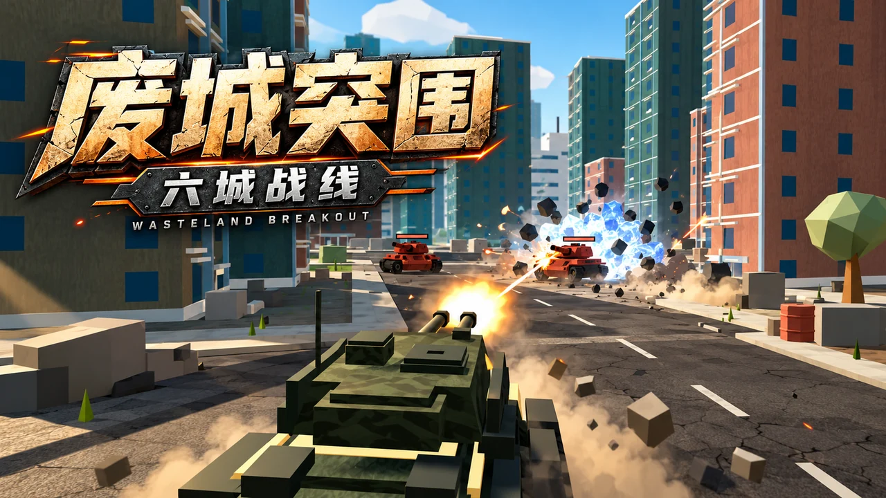

WASTELAND BREAKOUT / 玩法介绍
废城突围 · 六城战线
驾驶你的战车，穿过六座城市。让轻型坦克成长为超级天启，再去车库装备属于自己的涂装。
免费在线 · 单人游戏简体中文 / 繁體中文 / English

怎么玩
绕过建筑与掩体，清除全部防御单位并摧毁指挥基地，即可通过当前关卡。沿路拾取维修和强化补给，积累经验晋升战车。攻击基地会触发警报，全场守军将向你集结。
从这里开始
先去训练场试炮
在独立训练场熟悉越肩瞄准，体验移动靶、障碍通道与 Boss 试炼。DPS 测试记录实际炮弹伤害，首发开炮开始计时；按住 Alt 操作面板，R 重置。
沿街巷逐关突破
六座城市分别参考河岸旧城、海港街区、煤钢厂、集装箱港、雾江山城与海崖石城。利用街角躲避火线，注意补给，并在攻击基地前准备迎战守军。
升级战车，再换个造型
积累经验依次晋升轻型坦克、灰熊、犀牛和三种天启形态。车库提供经典军用涂装、四套 Q 版角色涂装、自定义编号与呼号，以及四种外观套件。
车库与试验场
10 套涂装可搭配自定义配色、炮塔徽章和车首贴纸；外观只改变造型，不改变伤害、装甲与碰撞尺寸。训练场可以自由切换六种车型、调整测试靶减伤，或启动不同阶段的 Boss。
操作方式
键盘与鼠标
W / S 前进倒车 · A / D 转向 · 鼠标瞄准 · 左键开炮 · Esc 暂停 · Alt 释放鼠标 · M 静音。训练场按 R 重置，按住 Alt 使用试验控制台。
手机与触屏
电脑键鼠游戏 · 请使用电脑浏览器游玩，暂不支持触屏操作。
保存与继续
关卡解锁、最佳成绩、涂装、语言、画质与音量设置保存在当前浏览器。重新打开游戏后从选关开始；当前战斗的位置与敌军状态不会续接。清除浏览器数据会移除本地记录。